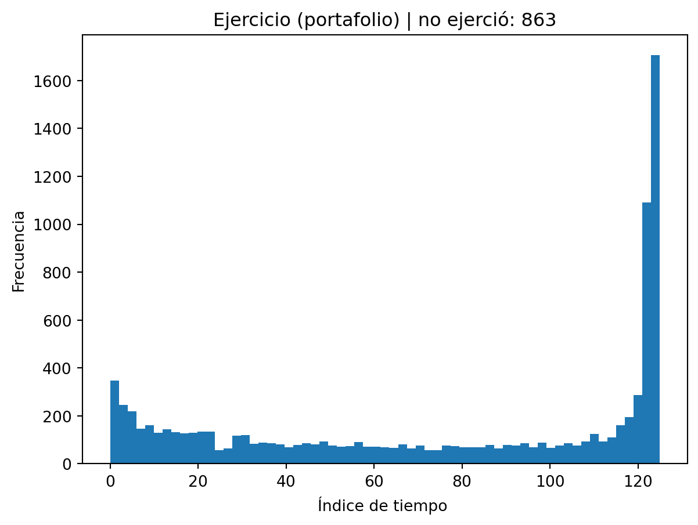

flowchart TB
U["Inputs\n- ticker(s)\n- fechas\n- num_sims, dt_days, T_days\n- K, r, grados_pasado\n- (port) w\n- (binomial) T_years, N"]
subgraph A["A) Datos + Estimadores"]
A1[get_close]
A2[returns_from_close]
A3[ultimo_precio]
A4[calcula_media]
A5[calcula_desv_est]
A6[calcula_correlacion]
end
subgraph B["B) Longstaff–Schwartz (1 activo)"]
B1[genera_simulaciones_individual]
B2[genera_df_simulaciones]
B3[ejercicio_americana_LS]
B4[obtiene_estrategia_LS]
B5[calcula_precio_americana]
B6[plot_hist_ejercicio]
end
subgraph C["C) Longstaff–Schwartz (Portafolio)"]
C1[genera_simulaciones_correlacionadas]
C2[genera_df_portafolio]
C3[ejercicio_americana_LS_port]
C4[obtiene_estrategia_LS_port]
C5[calcula_precio_americana_port]
C6[plot_hist_ejercicio]
end
subgraph D["D) Árbol Binomial (Americana)"]
D1[arbol_americano]
D2[arbol_americano_portafolio]
end
U --> A1 --> A2
A1 --> A3
A2 --> A4
A2 --> A5
A2 --> A6
A3 --> B1
A4 --> B1
A5 --> B1
B1 --> B2 --> B3 --> B4 --> B5 --> B6
A6 --> C1
A4 --> C1
A5 --> C1
A3 --> C1
C1 --> C2 --> C3 --> C4 --> C5 --> C6
U --> D1
U --> D2
click A1 "#func-get-close" "Detalle: get_close"
click A2 "#func-returns" "Detalle: returns_from_close"
click A3 "#func-s0" "Detalle: ultimo_precio"
click A4 "#func-mu" "Detalle: calcula_media"
click A5 "#func-sigma" "Detalle: calcula_desv_est"
click A6 "#func-rho" "Detalle: calcula_correlacion"
click B1 "#func-sim-single" "Detalle: genera_simulaciones_individual"
click B3 "#func-ls-single" "Detalle: ejercicio_americana_LS"
click B5 "#func-price-single" "Detalle: calcula_precio_americana"
click C1 "#func-sim-corr" "Detalle: genera_simulaciones_correlacionadas"
click C3 "#func-ls-port" "Detalle: ejercicio_americana_LS_port"
click C5 "#func-price-port" "Detalle: calcula_precio_americana_port"
click D1 "#func-bin-single" "Detalle: arbol_americano"
click D2 "#func-bin-port" "Detalle: arbol_americano_portafolio"
Finanzas
Finanzas
Proyecto individual
Profesor: Eduardo Selim Martínez Mayorga
Diagrama de flujo del notebook (Quarto)
Da click en una función para ir a su ficha (inputs → proceso → outputs).
Librerías
Code
import numpy as np
import pandas as pd
import yfinance as yf
import math
from functools import lru_cache
from sklearn.preprocessing import PolynomialFeatures
from sklearn.linear_model import LinearRegression
import matplotlib.pyplot as pltCode
TRADING_DAYS = 252 # días hábiles por añoDescargar datos de Yahoo Finance
get_close
Recibe: tickers, fecha_inicio, fecha_fin
Hace: descarga precios de Yahoo Finance y devuelve un DataFrame con columnas=tickers.
Code
@lru_cache(maxsize=128)
def _download_close_cached(tickers_tuple, start, end, auto_adjust=True):
tickers = list(tickers_tuple)
data = yf.download(
tickers,
start=start,
end=end,
progress=False,
auto_adjust=auto_adjust,
group_by="column",
)
# Caso MultiIndex
if isinstance(data.columns, pd.MultiIndex):
if "Close" in data.columns.get_level_values(0):
close = data["Close"].copy()
elif "Adj Close" in data.columns.get_level_values(0):
close = data["Adj Close"].copy()
else:
raise KeyError("No encontré 'Close' ni 'Adj Close' en columnas MultiIndex.")
# Caso SingleIndex
else:
if "Close" in data.columns:
close = data[["Close"]].copy()
elif "Adj Close" in data.columns:
close = data[["Adj Close"]].copy()
else:
raise KeyError("No encontré 'Close' ni 'Adj Close' en columnas.")
if len(tickers) == 1:
close.columns = [tickers[0]]
if isinstance(close, pd.Series):
close = close.to_frame(name=tickers[0])
close = close.dropna(how="all")
return close
def get_close(tickers, fecha_inicio, fecha_fin, auto_adjust=True):
if isinstance(tickers, str):
tickers = [tickers]
close = _download_close_cached(tuple(tickers), fecha_inicio, fecha_fin, auto_adjust=auto_adjust)
missing = [t for t in tickers if t not in close.columns]
if missing:
raise KeyError(f"Faltan columnas para tickers: {missing}. Columnas disponibles: {list(close.columns)}")
return close[tickers]returns_from_close
Recibe: close: DataFrame
Hace: calcula retornos log o simples.
Devuelve: DataFrame de retornos.
Code
def returns_from_close(close: pd.DataFrame, kind="log"):
close = close.dropna(how="any")
if kind == "log":
rets = np.log(close).diff()
else:
rets = close.pct_change()
return rets.dropna(how="any")Estimadores
ultimo_precio
Recibe: - ticker (str): símbolo (ej. "AAPL") - fecha_inicio (str): fecha inicio "YYYY-MM-DD" - fecha_fin (str): fecha fin "YYYY-MM-DD"
Qué hace: - Descarga la serie de precios de cierre (Close o Adj Close, según get_close) del ticker en el rango de fechas. - Toma el último valor disponible de la columna del ticker.
Devuelve: - float con el último precio observado: \(S_0\).
Code
def ultimo_precio(ticker, fecha_inicio, fecha_fin):
close = get_close(ticker, fecha_inicio, fecha_fin)[ticker]
return float(close.iloc[-1])calcula_media
Recibe: - ticker (str): símbolo (ej. “AAPL”) - fecha_inicio (str): fecha inicio "YYYY-MM-DD" - fecha_fin (str): fecha fin "YYYY-MM-DD" - kind (str, default “log”): tipo de retorno: log: \(r_t = \log(P_t) - \log(P_{t-1})\)
Qué hace: - Descarga precios del activo en el rango. - Construye la serie de retornos diarios con returns_from_close. - Calcula la media muestral de esos retornos.
Devuelve: - float con la media diaria: \(\mu_{\text{daily}} = \frac{1}{n}\sum_{t=1}^n r_t\).
Code
def calcula_media(ticker, fecha_inicio, fecha_fin, kind="log"):
close = get_close(ticker, fecha_inicio, fecha_fin)[ticker]
rets = returns_from_close(close.to_frame("x"), kind=kind)["x"]
return float(rets.mean()) # media por día calcula_desv_est
Recibe: - ticker (str): símbolo (ej. “AAPL”) - fecha_inicio (str): fecha inicio "YYYY-MM-DD" - fecha_fin (str): fecha fin "YYYY-MM-DD" - kind (str, default “log”): tipo de retorno: log: \(r_t = \log(P_t) - \log(P_{t-1})\) - ddof (int, default 1): grados de libertad para la desviación estándar: ddof=1 → muestral (recomendado para estimación) ddof=0 → “poblacional” (divide entre \(n\))
Qué hace: - Descarga precios. - Calcula retornos diarios. - Calcula la desviación estándar de retornos (por default, muestral).
Devuelve: - float con la volatilidad diaria estimada: \(\sigma_{\text{daily}}\).
Code
def calcula_desv_est(ticker, fecha_inicio, fecha_fin, kind="log", ddof=1):
close = get_close(ticker, fecha_inicio, fecha_fin)[ticker]
rets = returns_from_close(close.to_frame("x"), kind=kind)["x"]
return float(rets.std(ddof=ddof)) # sigma por día calcula_correlacion
Recibe: - ticker (str): símbolo (ej. “AAPL”) - fecha_inicio (str): fecha inicio "YYYY-MM-DD" - fecha_fin (str): fecha fin "YYYY-MM-DD" - kind (str, default “log”): tipo de retorno (log o simple)
Qué hace: - Descarga precios de ambos tickers. - Construye retornos diarios alineados por fecha (esto es importante: correlación requiere observaciones pareadas). - Calcula la correlación muestral de Pearson entre las dos series de retornos.
Devuelve: - float con la correlación: \(\rho \in [-1,1]\).
Code
def calcula_correlacion(ticker1, ticker2, fecha_inicio, fecha_fin, kind="log"):
close = get_close([ticker1, ticker2], fecha_inicio, fecha_fin)[[ticker1, ticker2]]
rets = returns_from_close(close, kind=kind)
return float(rets.corr().iloc[0, 1])PAYOFFS (sin globals)
Code
def payoff_call(S, K):
return np.maximum(S - K, 0.0)
def payoff_put(S, K):
return np.maximum(K - S, 0.0)SIMULACIÓN GBM (1 activo) CON MU HISTÓRICA (P)
El modelo buscamos simular es el movimiento browniano geométrico (GBM):
$ dS_t = S_t,dt + S_t,dW_t. $
La discretización para un paso de tamaño \(\Delta t\) es:
$ S_{t+t} = S_t !( (- ^2)t + ,Z ), ZN(0,1). $
Por lo que tenemos dos factores indispensables: - El drift se multiplica por \(\Delta t\). - El término aleatorio (browniano) se multiplica por \(\sqrt{\Delta t}\).
En el código se construye \(W\) como una suma acumulada de normales estándar, \(W=\sum Z\), y luego se usa $ S S_0( + W) $, lo cual equivale a asumir implícitamente \(\Delta t = 1\) (un paso de “tamaño 1”) y además deja el parámetro dt sin afectar realmente la escala del proceso. Esto puede mezclar unidades (por ejemplo, interpretar \(T=252/2\) como días mientras el proceso usa pasos de tamaño 1 sin conversion).
La corrección consiste en introducir explícitamente el tamaño del paso: si el paso es de dt_days días y se trabaja en años, entonces $ t = . $ Con esto, la simulación correcta usa: $ S_{k+1} = S_k !( (- ^2)t + ,Z_k ). $
Así, al cambiar dt_days o el horizonte T_days, el modelo se escala correctamente y las unidades de \(\mu\), \(\sigma\) y el descuento (por ejemplo con \(e^{-r\Delta t}\)) quedan consistentes.
genera_simulaciones_individual
Simula GBM con \(\Delta t=\tfrac{dt\_days}{252}\) y drift \(\mu\) histórica.
Recibe: - ticker1 (str): símbolo del activo (ej. "AAPL") - fecha_inicio (str): "YYYY-MM-DD" - fecha_fin (str): "YYYY-MM-DD" - num_sims (int): número de trayectorias simuladas - dt_days (int | float): tamaño del paso en días (ej. 1) - T_days (int | float): horizonte total en días (ej. 252/2) - returns_kind (str, default "log"): tipo de retorno usado para estimar \(\mu\) y \(\sigma\) - seed (int | None): semilla para reproducibilidad
Qué hace: 1. Descarga precios con get_close. 2. Calcula retornos diarios con returns_from_close. 3. Estima parámetros históricos: - \(\mu_{daily} =\) media diaria de retornos - \(\sigma_{daily} =\) desv. estándar diaria (muestral, ddof=1) 4. Convierte a unidades anuales y define el paso en años: - \(\Delta t = dt\_days/252\) 5. Genera una matriz de normales \(Z\) de tamaño (num_sims, steps) y construye incrementos logarítmicos. 6. Acumula \(\log S\) y regresa \(S\) en niveles, incluyendo el valor inicial \(S_0\).
Devuelve: - numpy.ndarray de tamaño (num_sims, steps+1): - primera columna = \(S_0\) - columnas siguientes = precios simulados en cada paso
Code
def genera_simulaciones_individual(
ticker1, fecha_inicio, fecha_fin,
num_sims, dt_days, T_days,
returns_kind="log",
seed=None
):
"""
Simula GBM con drift = mu histórica (medida P).
- dt_days: paso en días (1 diario)
- T_days: horizonte total en días (ej. 252/2)
Retorna array (num_sims, steps+1) incluyendo S0.
"""
rng = np.random.default_rng(seed)
close = get_close(ticker1, fecha_inicio, fecha_fin)[ticker1]
rets = returns_from_close(close.to_frame("x"), kind=returns_kind)["x"]
mu_daily = float(rets.mean())
sig_daily = float(rets.std(ddof=1))
S0 = float(close.iloc[-1])
steps = int(T_days / dt_days)
dt = dt_days / TRADING_DAYS # años por paso
# Se anualiza para usar fórmula continua anual
mu_annual = mu_daily * TRADING_DAYS
sig_annual = sig_daily * np.sqrt(TRADING_DAYS)
Z = rng.normal(size=(num_sims, steps))
inc = (mu_annual - 0.5 * sig_annual**2) * dt + sig_annual * np.sqrt(dt) * Z
logS = np.log(S0) + np.cumsum(inc, axis=1)
S = np.exp(logS)
S = np.concatenate([np.full((num_sims, 1), S0), S], axis=1)
return S
def genera_df_simulaciones(ticker1, fecha_inicio, fecha_fin, num_sims, dt_days, T_days,
returns_kind="log", seed=None):
trayectorias = genera_simulaciones_individual(
ticker1, fecha_inicio, fecha_fin,
num_sims, dt_days, T_days,
returns_kind=returns_kind, seed=seed
)
steps = trayectorias.shape[1] - 1
df = pd.DataFrame(trayectorias[:, 1:])
df.columns = [str(i) for i in range(1, steps + 1)]
return dfLONGSTAFF–SCHWARTZ (1 activo)
En esta sección implementamos Longstaff–Schwartz (LS) para valuar (o aproximar) una opción Americana usando simulación Monte Carlo. La idea central es:
- Simulas trayectorias \(S_{t}\).
- Vas hacia atrás en el tiempo (backward induction).
- En cada tiempo decides si conviene ejercer ahora (valor intrínseco) o continuar (valor esperado de seguir), donde el valor de continuación se aproxima con una regresión sobre el estado \(S_t\).
En LS, en cada tiempo \(t\) comparamos:
- Intrínseco: \(g(S_t)\) (payoff inmediato).
- Continuación: \(\mathbb{E}\left[e^{-r\Delta t}V_{t+\Delta t}\mid S_t\right]\) (aproximado por regresión).
Ejercemos si: $ g(S_t) (S_t). $
ejercicio_americana_LS
Recibe: - ticker1 (str), fecha_inicio (str), fecha_fin (str) - num_sims (int): número de trayectorias simuladas - dt_days (int|float): paso en días - T_days (int|float): horizonte total en días - funcion_payoff (callable): función vectorizada tipo funcion_payoff(S, K) que regresa payoff - K (float): strike - grados_pasado (int): grado del polinomio en la regresión (bases polinomiales) - r (float): tasa libre de riesgo anual (continua) - returns_kind (str): cómo se estiman retornos para simulación - seed (int|None): semilla aleatoria - min_itm (int): mínimo de puntos “in the money” para ajustar regresión (evita regresiones inestables)
Qué hace: 1. Simula trayectorias y crea df con precios por paso (sin \(S_0\)):
df tiene tamaño (num_sims, steps) y columnas "1"... "steps".
Convierte a
numpypara mayor eficiencia:paths = df.to_numpy().Define el tamaño del paso en años: $ t = $
y el factor de descuento por un paso: $ disc = e^{-rt}. $Inicializa un indicador:
alive[i] = Truesignifica que la trayectoriaiaún no ha ejercido.- Si una trayectoria ejerce en algún tiempo, se marca
alive=Falsepara que ya no “vuelva a ejercer” después (porque una americana se ejerce una sola vez).
Define
cf(“cashflows”):cf[i]representa el flujo que esa trayectoria recibiría si se mantiene la política óptima desde el tiempo actual hacia adelante.- Se inicia en el vencimiento con el payoff final: $ cf = g(S_T). $
Recorre hacia atrás
t = steps-1 ... 1:- Descuenta el flujo futuro un paso: $ cf_{disc} = cf disc. $
- Obtiene el estado en ese tiempo: $ S_t = paths[:, t-1]. $
- Calcula intrínseco: $ intrinsic = g(S_t). $
- Define elegibles para regresión:
- Deben estar vivos (
alive=True) y estar ITM (intrinsic>0). Esto es estándar en LS: solo haces regresión con estados donde hay decisión real (si intrinsic=0 no hay incentivo a ejercer).
- Deben estar vivos (
Si hay pocos elegibles (
eligible.sum() < min_itm):- No ajusta regresión.
- Solo avanza descontando:
cf = cf_disc. - Guarda lista vacía de ejercicio en este tiempo.
Si sí hay suficientes elegibles:
- Ajusta regresión para aproximar continuación:
- Entradas
X = S_t[eligible] - Salidas
Y = cf_disc[eligible] - Bases polinomiales de grado
grados_pasado - Ajusta
LinearRegressiony predice: $ (S_t) $
- Entradas
- Decide ejercicio:
ex = intrinsic >= cont
- Para los que ejercen:
- Fija su cashflow a intrínseco:
cf[idx_ex] = intrinsic[idx_ex] - Los “mata” para tiempos anteriores:
alive[idx_ex] = False
- Fija su cashflow a intrínseco:
- Ajusta regresión para aproximar continuación:
Va guardando en
lstlos índices que ejercen en cada tiempo (en el orden en que corre hacia atrás).
Code
def ejercicio_americana_LS(
ticker1, fecha_inicio, fecha_fin,
num_sims, dt_days, T_days,
funcion_payoff, K, grados_pasado,
r,
returns_kind="log",
seed=None,
min_itm=25
):
"""
Devuelve [lst, df] como tú.
- df: sims x steps (sin S0) con columnas "1"... "steps"
- lst: lista de listas de índices ejercidos (se arma hacia atrás como tu lógica)
"""
df = genera_df_simulaciones(
ticker1, fecha_inicio, fecha_fin,
num_sims, dt_days, T_days,
returns_kind=returns_kind, seed=seed
)
steps = df.shape[1]
dt = dt_days / TRADING_DAYS
disc = np.exp(-r * dt)
paths = df.to_numpy()
alive = np.ones(num_sims, dtype=bool)
# payoff al vencimiento
cf = funcion_payoff(paths[:, -1], K).astype(float)
lst = []
lst.append(np.where((cf > 0) & alive)[0].tolist())
# backward t = steps-1 ... 1
for t in range(steps - 1, 0, -1):
cf_disc = cf * disc
S_t = paths[:, t - 1]
intrinsic = funcion_payoff(S_t, K).astype(float)
eligible = alive & (intrinsic > 0)
if eligible.sum() < min_itm:
cf = cf_disc
lst.append([])
continue
X = S_t[eligible].reshape(-1, 1)
Y = cf_disc[eligible].reshape(-1, 1)
polin = PolynomialFeatures(degree=grados_pasado, include_bias=True)
Xp = polin.fit_transform(X)
reg = LinearRegression().fit(Xp, Y)
cont = reg.predict(Xp).flatten()
ex = intrinsic[eligible] >= cont
idx_eligible = np.where(eligible)[0]
idx_ex = idx_eligible[ex]
cf = cf_disc.copy()
cf[idx_ex] = intrinsic[idx_ex]
alive[idx_ex] = False
lst.append(idx_ex.tolist())
return [lst, df]obtiene_estrategia_LS
Recibe: - Los mismos parámetros que ejercicio_americana_LS, excepto min_itm (aquí no se usa). - Internamente llama a ejercicio_americana_LS(...). Qué hace
Obtiene
lstydf.Invierte
lstpara volverlo cronológico (de \(t=1\) hacia \(t=steps\)).Construye una matriz binaria
df_estrategiade tamaño(num_sims, steps):df_estrategia[i, j] = 1si la trayectoriaiejerció en el tiempoj.
Para cada trayectoria i:
Si nunca ejerció, guarda
-1.Si ejerció, guarda el primer índice temporal donde aparece un
1.
Devuelve: [lista_fechas_ejercicio, df] donde:
- `lista_fechas_ejercicio[i]` es el primer tiempo donde la simulación i ejerce (o -1 si no ejerció).
- `df` son las trayectorias simuladas (sin $S_0$).Code
def obtiene_estrategia_LS(
ticker1, fecha_inicio, fecha_fin,
num_sims, dt_days, T_days,
funcion_payoff, K, grados_pasado,
r,
returns_kind="log",
seed=None
):
lst, df = ejercicio_americana_LS(
ticker1, fecha_inicio, fecha_fin,
num_sims, dt_days, T_days,
funcion_payoff, K, grados_pasado,
r=r, returns_kind=returns_kind, seed=seed
)
num_cols = df.shape[1]
lst = list(reversed(lst)) # orden temporal
df_estrategia = np.zeros((num_sims, num_cols), dtype=int)
for j in range(num_cols):
idx = lst[j] if j < len(lst) else []
if idx:
df_estrategia[idx, j] = 1
lista_fechas_ejercicio = []
for i in range(num_sims):
row = df_estrategia[i, :]
if row.sum() == 0:
lista_fechas_ejercicio.append(-1)
else:
lista_fechas_ejercicio.append(int(np.argmax(row)))
return [lista_fechas_ejercicio, df]calcula_precio_americana
Esta función toma la política de ejercicio que encontró Longstaff–Schwartz (LS) y la convierte en un precio: el promedio del payoff descontado al tiempo de ejercicio de cada trayectoria.
Recibe
ticker1(str),fecha_inicio(str),fecha_fin(str)num_sims(int): número de simulacionesdt_days(int|float): tamaño del paso en díasT_days(int|float): horizonte total en díasfuncion_payoff(callable): payoff vectorizado o escalar, tipofuncion_payoff(S, K)K(float): strikegrados_pasado(int): grado del polinomio para la regresión en LSr(float): tasa libre de riesgo anual (continua)returns_kind(str): tipo de retorno (log o simple) usado para simulaciónseed(int|None): semilla para reproducibilidad
Qué hace (paso a paso)
Llama a
obtiene_estrategia_LS(...)para obtener:lista_fechas_ejercicio: lista con el primer tiempo (índice) donde cada trayectoria ejercería, o-1si no ejerció.df:DataFramecon trayectorias simuladas (sin \(S_0\)), con columnas"1"... "steps".
Convierte el paso a años: \[ \Delta t = \frac{dt\_days}{252}. \]
Para cada trayectoria
i:- Si
t_idx < 0(nunca ejerció), asigna payoff 0. - Si sí ejerció:
- Toma el precio simulado en el tiempo de ejercicio:
S_ex = df.iloc[i, t_idx] - Calcula payoff inmediato
funcion_payoff(S_ex, K) - Lo descuenta a valor presente con descuento continuo: \[ PV_i = g(S_{t_i})\exp(-r \, t_i \Delta t). \]
- Toma el precio simulado en el tiempo de ejercicio:
Ojo con
(t_idx + 1):- En
df, la columna"1"representa el primer paso después de \(S_0\).
- Pero
t_idxes un índice base 0 (Python):t_idx = 0corresponde a tiempo 1 paso.
- Por eso el tiempo real en pasos es
(t_idx + 1).
- Si
Construye
estrategia_ejerciciopara graficar:- Convierte
-1aNaN(para que el histograma ignore “no ejerció”). - Mantiene el índice
tsi sí ejerció.
- Convierte
Devuelve
[precio, estrategia_ejercicio]donde:precio(float) = promedio de los payoffs descontados: \[ \hat{V}_0 = \frac{1}{N}\sum_{i=1}^N PV_i \]estrategia_ejercicio(list[float]) = lista de índices de ejercicio (oNaNsi no ejerció), útil para histograma.
Code
def calcula_precio_americana(
ticker1, fecha_inicio, fecha_fin,
num_sims, dt_days, T_days,
funcion_payoff, K, grados_pasado,
r,
returns_kind="log",
seed=None
):
lista_fechas_ejercicio, df = obtiene_estrategia_LS(
ticker1, fecha_inicio, fecha_fin,
num_sims, dt_days, T_days,
funcion_payoff, K, grados_pasado,
r=r, returns_kind=returns_kind, seed=seed
)
dt = dt_days / TRADING_DAYS
payoff_ejercicio = np.zeros(num_sims, dtype=float)
for i in range(num_sims):
t_idx = lista_fechas_ejercicio[i]
if t_idx < 0:
payoff_ejercicio[i] = 0.0
else:
S_ex = float(df.iloc[i, t_idx])
payoff_ejercicio[i] = float(funcion_payoff(S_ex, K)) * math.exp(-r * (t_idx + 1) * dt)
estrategia_ejercicio = [np.nan if t < 0 else t for t in lista_fechas_ejercicio]
return [float(np.mean(payoff_ejercicio)), estrategia_ejercicio]SIMULACIÓN CORRELACIONADA (2 activos) CON MU HISTÓRICA (P)
Aquí simulamos dos activos \((S_t^{(1)}, S_t^{(2)})\) bajo GBM correlacionados, usando parámetros históricos (medida \(P\)):
[ dS_t^{(1)}=_1 S_t^{(1)}dt + _1 S_t^{(1)} dW_t^{(1)}, dS_t^{(2)}=_2 S_t^{(2)}dt + _2 S_t^{(2)} dW_t^{(2)}, ] con correlación instantánea [ (dW_t^{(1)}, dW_t^{(2)})=. ]
genera_simulaciones_correlacionadas
Recibe: - ticker1 (str), ticker2 (str) - fecha_inicio (str), fecha_fin (str) - num_sims (int): número de trayectorias - dt_days (int|float): paso en días - T_days (int|float): horizonte en días - returns_kind (str, default "log"): retornos para estimar \(\mu\) y \(\sigma\) - seed (int|None): semilla para reproducibilidad
Qué hace (paso a paso): 1. Descarga precios de ambos activos y calcula retornos diarios alineados: - Estima \(\mu_{1,daily}, \sigma_{1,daily}, \mu_{2,daily}, \sigma_{2,daily}\). - Estima \(\rho\) como correlación muestral de retornos.
Define valores iniciales: [ S_{0,1}=, S_{0,2}=. ]
Define unidades (igual que en 1 activo): [ t = , {annual}=252,{daily}, {annual}=,{daily}. ]
Construye la correlación con Cholesky:
- Matriz de correlación objetivo: [ C= \[\begin{pmatrix}1 & \rho\\ \rho & 1\end{pmatrix}\] ]
- Factor de Cholesky \(L\) tal que \(C = LL^\top\).
Genera normales iid:
Z ~ N(0, I)con forma(num_sims, steps, 2).
Obtiene normales correlacionadas:
EZ = Z @ L.T
entonces cada par \((EZ_1, EZ_2)\) tiene correlación \(\rho\).
Simula incrementos logarítmicos (GBM exacto): [ S^{(i)} = (_i - _i^2)t + _i, _i, ] donde \((\varepsilon_1,\varepsilon_2)\) son las normales correlacionadas.
Construye \(S_1, S_2\) acumulando y exponenciando, e inserta la columna inicial \(S_0\) al principio.
Devuelve: - [S1, S2] donde: - S1: np.ndarray de tamaño (num_sims, steps+1) con \(S_{0,1}\) incluido. - S2: np.ndarray de tamaño (num_sims, steps+1) con \(S_{0,2}\) incluido.
Code
def genera_simulaciones_correlacionadas(
ticker1, ticker2,
fecha_inicio, fecha_fin,
num_sims, dt_days, T_days,
returns_kind="log",
seed=None
):
rng = np.random.default_rng(seed)
close = get_close([ticker1, ticker2], fecha_inicio, fecha_fin)[[ticker1, ticker2]]
rets = returns_from_close(close, kind=returns_kind)
mu1_daily = float(rets[ticker1].mean()); sig1_daily = float(rets[ticker1].std(ddof=1))
mu2_daily = float(rets[ticker2].mean()); sig2_daily = float(rets[ticker2].std(ddof=1))
rho = float(rets.corr().iloc[0, 1])
S01 = float(close[ticker1].iloc[-1])
S02 = float(close[ticker2].iloc[-1])
steps = int(T_days / dt_days)
dt = dt_days / TRADING_DAYS
mu1_annual = mu1_daily * TRADING_DAYS
mu2_annual = mu2_daily * TRADING_DAYS
sig1_annual = sig1_daily * np.sqrt(TRADING_DAYS)
sig2_annual = sig2_daily * np.sqrt(TRADING_DAYS)
C = np.array([[1.0, rho], [rho, 1.0]])
L = np.linalg.cholesky(C)
Z = rng.normal(size=(num_sims, steps, 2))
EZ = Z @ L.T
inc1 = (mu1_annual - 0.5 * sig1_annual**2) * dt + sig1_annual * np.sqrt(dt) * EZ[:, :, 0]
inc2 = (mu2_annual - 0.5 * sig2_annual**2) * dt + sig2_annual * np.sqrt(dt) * EZ[:, :, 1]
S1 = np.exp(np.log(S01) + np.cumsum(inc1, axis=1))
S2 = np.exp(np.log(S02) + np.cumsum(inc2, axis=1))
S1 = np.concatenate([np.full((num_sims, 1), S01), S1], axis=1)
S2 = np.concatenate([np.full((num_sims, 1), S02), S2], axis=1)
return [S1, S2]genera_df_portafolio
Esta función construye el portafolio: \(P_t = wS^{(1)}_{t} + (1-w)S^{(2)}_{t}\)
Recibe:
w(float): peso del activo 1 (el del activo 2 es 1-w)ticker1,ticker2,fecha_inicio,fecha_finnum_sims,dt_days,T_daysreturns_kind,seed
Qué hace:
Llama
genera_simulaciones_correlacionadas(...)y obtiene[S1, S2].Construye el portafolio en niveles para cada trayectoria y tiempo:
- P = wS1 + (1-w)S2
Elimina la columna inicial (\(P_0\)) para que el formato coincida con LS:
- Devuelve solo pasos
"1"... "steps".
- Devuelve solo pasos
Devuelve: DataFrame (num_sims, steps) con precios del portafolio simulados (sin \(P_0\)), columnas "1"... "steps".
Code
def genera_df_portafolio(
w, ticker1, ticker2,
fecha_inicio, fecha_fin,
num_sims, dt_days, T_days,
returns_kind="log",
seed=None
):
S1, S2 = genera_simulaciones_correlacionadas(
ticker1, ticker2,
fecha_inicio, fecha_fin,
num_sims, dt_days, T_days,
returns_kind=returns_kind, seed=seed
)
P = w * S1 + (1 - w) * S2
steps = P.shape[1] - 1
df = pd.DataFrame(P[:, 1:])
df.columns = [str(i) for i in range(1, steps + 1)]
return dfLONGSTAFF–SCHWARTZ (PORTAFOLIO)
Aquí aplicamos Longstaff–Schwartz (LS) a una opción Americana cuyo subyacente es un portafolio:
[ P_t = w S_t^{(1)} + (1-w) S_t^{(2)}. ]
La lógica del algoritmo es la misma que en 1 activo: en cada tiempo comparamos el valor intrínseco inmediato (g(P_t)) contra el valor de continuación ((P_t)) estimado por regresión.
ejercicio_americana_LS_port
Recibe: - w (float): peso del activo 1 (activo 2 usa 1-w) - ticker1 (str), ticker2 (str) - fecha_inicio (str), fecha_fin (str) - num_sims (int): número de trayectorias simuladas - dt_days (int|float): paso en días - T_days (int|float): horizonte en días - funcion_payoff (callable): payoff sobre portafolio, tipo funcion_payoff(P, K) - K (float): strike (en unidades del portafolio) - grados_pasado (int): grado del polinomio para regresión LS - r (float): tasa libre de riesgo anual (continua) - returns_kind (str, default "log"): retornos usados para estimar (,,) en la simulación - seed (int|None): semilla - min_itm (int): mínimo de puntos ITM para ajustar regresión
Qué hace (paso a paso)
Construye trayectorias del portafolio en un
DataFrame:- Llama a
genera_df_portafolio(...) - Obtiene
dftamaño(num_sims, steps)con columnas"1"... "steps". - Nota:
dfya contiene (P_t), o sea el subyacente que usa LS.
- Llama a
Define unidades: [ t = , disc = e^{-rt}. ]
Convierte
dfa numpy:paths = df.to_numpy().Controla ejercicio único por trayectoria con:
alive[i]=Truesi la trayectoriaiaún no ha ejercido.- si ejerce en algún tiempo, se marca
Falsepara no “ejercer dos veces”.
Inicializa los cashflows al vencimiento: [ cf_i = g(P_T^{(i)}). ]
Recorre hacia atrás
t = steps-1 ... 1:- Descuenta un paso:
cf_disc = cf * disc - Estado actual del portafolio:
S_t = paths[:, t-1](aquíS_tes realmente (P_t)) - Valor intrínseco:
intrinsic = g(P_t) - Elegibles para regresión:
eligible = alive & (intrinsic > 0)
- Descuenta un paso:
Si hay pocos elegibles (
eligible.sum() < min_itm):- No ajusta regresión, solo actualiza
cf = cf_disc - Guarda lista vacía de ejercicio.
- No ajusta regresión, solo actualiza
Si hay suficientes elegibles:
- Ajusta regresión polinomial para estimar continuación:
X = P_t(solo de elegibles)Y = cf_disc(solo de elegibles)- Predice continuación ((P_t))
- Decide ejercicio si: [ g(P_t) (P_t). ]
- Para los que ejercen:
- fija
cfa intrínseco - marca
alive=Falsepara no volver a ejercer
- fija
- Ajusta regresión polinomial para estimar continuación:
Guarda en
lstlos índices que ejercen en cada tiempo (se arma hacia atrás).
Devuelve
[lst, df]donde:df: trayectorias simuladas del portafolio (P_t), tamaño(num_sims, steps).lst: lista de listas de índices de trayectorias que ejercen por tiempo (construida hacia atrás).
Code
def ejercicio_americana_LS_port(
w, ticker1, ticker2,
fecha_inicio, fecha_fin,
num_sims, dt_days, T_days,
funcion_payoff, K, grados_pasado,
r,
returns_kind="log",
seed=None,
min_itm=25
):
df = genera_df_portafolio(
w, ticker1, ticker2,
fecha_inicio, fecha_fin,
num_sims, dt_days, T_days,
returns_kind=returns_kind, seed=seed
)
steps = df.shape[1]
dt = dt_days / TRADING_DAYS
disc = np.exp(-r * dt)
paths = df.to_numpy()
alive = np.ones(num_sims, dtype=bool)
cf = funcion_payoff(paths[:, -1], K).astype(float)
lst = []
lst.append(np.where((cf > 0) & alive)[0].tolist())
for t in range(steps - 1, 0, -1):
cf_disc = cf * disc
S_t = paths[:, t - 1]
intrinsic = funcion_payoff(S_t, K).astype(float)
eligible = alive & (intrinsic > 0)
if eligible.sum() < min_itm:
cf = cf_disc
lst.append([])
continue
X = S_t[eligible].reshape(-1, 1)
Y = cf_disc[eligible].reshape(-1, 1)
polin = PolynomialFeatures(degree=grados_pasado, include_bias=True)
Xp = polin.fit_transform(X)
reg = LinearRegression().fit(Xp, Y)
cont = reg.predict(Xp).flatten()
ex = intrinsic[eligible] >= cont
idx_eligible = np.where(eligible)[0]
idx_ex = idx_eligible[ex]
cf = cf_disc.copy()
cf[idx_ex] = intrinsic[idx_ex]
alive[idx_ex] = False
lst.append(idx_ex.tolist())
return [lst, df]obtiene_estrategia_LS_port
Recibe: Los mismos parámetros que ejercicio_americana_LS_port(...) (sin min_itm explícito).
Qué hace:
Llama
ejercicio_americana_LS_port(...)y obtienelstydf.Invierte
lstpara volverlo cronológico.Construye una matriz binaria
df_estrategia(sims × steps) con 1 en el tiempo donde ejerció.Para cada trayectoria:
si nunca ejerció, guarda
-1si ejerció, guarda el primer tiempo donde ejerció (índice temporal)
Devuelve:
[lista_fechas_ejercicio, df] donde:
lista_fechas_ejercicio[i]= tiempo (índice) de ejercicio de la trayectoriaio-1.df= trayectorias del portafolio \(P_t\)
Code
def obtiene_estrategia_LS_port(
w, ticker1, ticker2,
fecha_inicio, fecha_fin,
num_sims, dt_days, T_days,
funcion_payoff, K, grados_pasado,
r,
returns_kind="log",
seed=None
):
lst, df = ejercicio_americana_LS_port(
w, ticker1, ticker2,
fecha_inicio, fecha_fin,
num_sims, dt_days, T_days,
funcion_payoff, K, grados_pasado,
r=r, returns_kind=returns_kind, seed=seed
)
num_cols = df.shape[1]
lst = list(reversed(lst))
df_estrategia = np.zeros((num_sims, num_cols), dtype=int)
for j in range(num_cols):
idx = lst[j] if j < len(lst) else []
if idx:
df_estrategia[idx, j] = 1
lista_fechas_ejercicio = []
for i in range(num_sims):
row = df_estrategia[i, :]
if row.sum() == 0:
lista_fechas_ejercicio.append(-1)
else:
lista_fechas_ejercicio.append(int(np.argmax(row)))
return [lista_fechas_ejercicio, df]calcula_precio_americana_port
Esta función convierte la estrategia de ejercicio hallada por Longstaff–Schwartz en un precio para la opción Americana cuyo subyacente es el portafolio:
[ P_t = wS_t^{(1)} + (1-w)S_t^{(2)}. ]
El precio se estima como el promedio del payoff descontado al tiempo de ejercicio de cada trayectoria.
Recibe: - w (float): peso del activo 1 (activo 2 usa 1-w) - ticker1 (str), ticker2 (str) - fecha_inicio (str), fecha_fin (str) - num_sims (int): número de trayectorias simuladas - dt_days (int|float): paso en días - T_days (int|float): horizonte en días - funcion_payoff (callable): payoff sobre el portafolio, tipo funcion_payoff(P, K) - K (float): strike (en unidades del portafolio) - grados_pasado (int): grado del polinomio usado dentro de LS - r (float): tasa libre de riesgo anual (continua) - returns_kind (str, default "log") - seed (int|None)
Qué hace: 1. Llama a obtiene_estrategia_LS_port(...) para obtener: - lista_fechas_ejercicio: primer tiempo de ejercicio por trayectoria (o -1 si no ejerció). - df: trayectorias simuladas del portafolio (P_t) (sin (P_0)), con columnas "1"... "steps".
Convierte el paso a años: [ t = . ]
Para cada trayectoria
i:- Si
t_idx < 0, asigna payoff 0 (no ejerció en ningún tiempo). - Si sí ejerció:
- Toma el precio del portafolio en el tiempo de ejercicio: [ P_{ex} = df[i, t_idx] ]
- Evalúa payoff inmediato (g(P_{ex})).
- Descuenta a valor presente: [ PV_i = g(P_{ex})!(-r,(t_{pasos})t), ] donde (t_{pasos} = t_idx + 1).
Ojo con
(t_idx + 1):t_idx=0corresponde al primer paso (columna"1"), o sea 1 paso después de (P_0).- Por eso el tiempo real en pasos es
t_idx + 1.
- Si
Construye
estrategia_ejerciciopara graficar histograma:- Reemplaza
-1porNaN, así el histograma ignora trayectorias que no ejercieron.
- Reemplaza
Devuelve
[precio_port, estrategia_ejercicio]donde:precio_port(float) = promedio de los payoffs descontados: [ 0 = {i=1}^N PV_i ]estrategia_ejercicio(list[float]) = tiempos de ejercicio (índice) oNaNsi no ejerció.
Code
def calcula_precio_americana_port(
w, ticker1, ticker2,
fecha_inicio, fecha_fin,
num_sims, dt_days, T_days,
funcion_payoff, K, grados_pasado,
r,
returns_kind="log",
seed=None
):
lista_fechas_ejercicio, df = obtiene_estrategia_LS_port(
w, ticker1, ticker2,
fecha_inicio, fecha_fin,
num_sims, dt_days, T_days,
funcion_payoff, K, grados_pasado,
r=r, returns_kind=returns_kind, seed=seed
)
dt = dt_days / TRADING_DAYS
payoff_ejercicio = np.zeros(num_sims, dtype=float)
for i in range(num_sims):
t_idx = lista_fechas_ejercicio[i]
if t_idx < 0:
payoff_ejercicio[i] = 0.0
else:
S_ex = float(df.iloc[i, t_idx])
payoff_ejercicio[i] = float(funcion_payoff(S_ex, K)) * math.exp(-r * (t_idx + 1) * dt)
estrategia_ejercicio = [np.nan if t < 0 else t for t in lista_fechas_ejercicio]
return [float(np.mean(payoff_ejercicio)), estrategia_ejercicio]BINOMIAL AMERICANA (sola)
En esta sección valuamos una opción Americana con un árbol binomial de (N) pasos.
A diferencia del GBM con () histórica (medida (P)), en el árbol binomial para valuación se trabaja con la medida neutral al riesgo (risk-neutral): el drift relevante para el precio es (r), no ().
arbol_americano
Recibe: - ticker (str): símbolo del activo (ej. "AAPL") - fecha_inicio (str), fecha_fin (str): ventana histórica para estimar () - K (float): strike - T_years (float): madurez en años (ej. 1.0) - r (float): tasa libre de riesgo anual (continua) - N (int): número de pasos del árbol - tipo (str): "call" o "put" - returns_kind (str, default "log"): tipo de retorno para estimar ()
Qué hace 1. Estima volatilidad diaria ({daily}) desde retornos históricos con calcula_desv_est(...)
y la convierte a anual: [ = {daily}. ]
Define el tamaño del paso en años: [ t = . ]
Define factores de subida y bajada (modelo tipo CRR): [ u = e^{}, d=. ]
Define la probabilidad neutral al riesgo: [ p = , ] y el factor de descuento por paso: [ disc = e^{-rt}. ]
Obtiene el precio inicial (S_0) como el último precio histórico en el rango.
Construye los precios al vencimiento (S_T(j)) para (j=0,,N): [ S_T(j)=S_0,uj,d{N-j}. ]
Evalúa el payoff al vencimiento: [ V_T(j)=(S_T(j)-K,0) , V_T(j)=(K-S_T(j),0) . ]
Hace backward induction desde (i=N-1) hasta (0):
- Valor por continuación (risk-neutral): [ V^{cont} = disc,[pV{up}+(1-p)V{down}]. ]
- Valor por ejercicio inmediato (Americana): [ V^{ex} = (S_i-K,0) , (K-S_i,0) . ]
- Toma: [ V_i = (V^{cont}, V^{ex}). ] Esto es lo que hace que sea Americana: permite ejercicio temprano.
Devuelve - float: valor de la opción en el nodo inicial, (V_0).
Code
def arbol_americano(ticker, fecha_inicio, fecha_fin, K, T_years, r, N, tipo="put",
returns_kind="log"):
sigma_daily = calcula_desv_est(ticker, fecha_inicio, fecha_fin, kind=returns_kind, ddof=1)
sigma = sigma_daily * np.sqrt(TRADING_DAYS) # anual
dt = T_years / N
u = np.exp(sigma * np.sqrt(dt))
d = 1.0 / u
p = (np.exp(r * dt) - d) / (u - d)
disc = np.exp(-r * dt)
S0 = ultimo_precio(ticker, fecha_inicio, fecha_fin)
j = np.arange(N + 1)
S_T = S0 * (u ** j) * (d ** (N - j))
V = np.maximum(S_T - K, 0.0) if tipo == "call" else np.maximum(K - S_T, 0.0)
for i in range(N - 1, -1, -1):
j = np.arange(i + 1)
S_i = S0 * (u ** j) * (d ** (i - j))
V = disc * (p * V[1:] + (1 - p) * V[:-1])
V = np.maximum(V, S_i - K) if tipo == "call" else np.maximum(V, K - S_i)
return float(V[0])arbol_americano_portafolio
En esta función valuamos una opción Americana con árbol binomial, pero cuyo resultado es el portafolio:
[ P = wS^{(1)} + (1-w)S^{(2)}. ]
La idea del código es: tratar al portafolio como si fuera “un solo activo” binomial con volatilidad anual (_P) estimada con:
[ _P^2 = w^2_1^2 + (1-w)^2_2^2 + 2w(1-w)_1_2. ]
Recibe - ticker1 (str), ticker2 (str) - w (float): peso del activo 1 (activo 2 tiene 1-w) - fecha_inicio (str), fecha_fin (str): ventana histórica para estimar (_1,_2,) - K (float): strike (en unidades del portafolio) - T_years (float): madurez en años - r (float): tasa libre de riesgo anual (continua) - N (int): número de pasos del árbol - tipo (str): "call" o "put" - returns_kind (str, default "log"): tipo de retornos para estimación
Qué hace 1. Estima volatilidades diarias de ambos activos y anualiza: [ 1 = {1,daily}, 2 = {2,daily}. ]
Estima la correlación histórica de retornos: [ = Corr(r^{(1)}, r^{(2)}). ]
Calcula la volatilidad anual del portafolio: [ _P = . ]
Construye el árbol binomial con (N) pasos y horizonte (T): [ t = , u = e^{_P}, d = . ]
Calcula probabilidad neutral al riesgo y descuento: [ p = , disc = e^{-rt}. ]
Define el valor inicial del portafolio con últimos precios: [ P_0 = wS_{0,1} + (1-w)S_{0,2}. ]
Calcula valores al vencimiento: [ P_T(j)=P_0u^j d^{N-j}, j=0,,N, ] y payoff: [ V_T(j)=(P_T(j)-K,0) ,(K-P_T(j),0) . ]
Backward induction (Americana):
- Continuación: [ V^{cont} = disc,[pV{up}+(1-p)V{down}]. ]
- Ejercicio inmediato: [ V^{ex}=(P_i-K,0) (K-P_i,0) . ]
- Nodo: [ V_i = (V^{cont}, V^{ex}). ]
Devuelve
float: valor aproximado en el nodo inicial (V_0) del derivado americano sobre el portafolio.
Code
def arbol_americano_portafolio(ticker1, ticker2, w, fecha_inicio, fecha_fin, K, T_years, r, N,
tipo="call", returns_kind="log"):
sig1_daily = calcula_desv_est(ticker1, fecha_inicio, fecha_fin, kind=returns_kind, ddof=1)
sig2_daily = calcula_desv_est(ticker2, fecha_inicio, fecha_fin, kind=returns_kind, ddof=1)
sig1 = sig1_daily * np.sqrt(TRADING_DAYS)
sig2 = sig2_daily * np.sqrt(TRADING_DAYS)
rho = calcula_correlacion(ticker1, ticker2, fecha_inicio, fecha_fin, kind=returns_kind)
sigmaP = math.sqrt((w**2) * (sig1**2) + ((1-w)**2) * (sig2**2) + 2*w*(1-w)*rho*sig1*sig2)
dt = T_years / N
u = np.exp(sigmaP * np.sqrt(dt))
d = 1.0 / u
p = (np.exp(r * dt) - d) / (u - d)
disc = np.exp(-r * dt)
S01 = ultimo_precio(ticker1, fecha_inicio, fecha_fin)
S02 = ultimo_precio(ticker2, fecha_inicio, fecha_fin)
S0 = w * S01 + (1 - w) * S02
j = np.arange(N + 1)
S_T = S0 * (u ** j) * (d ** (N - j))
V = np.maximum(S_T - K, 0.0) if tipo == "call" else np.maximum(K - S_T, 0.0)
for i in range(N - 1, -1, -1):
j = np.arange(i + 1)
S_i = S0 * (u ** j) * (d ** (i - j))
V = disc * (p * V[1:] + (1 - p) * V[:-1])
V = np.maximum(V, S_i - K) if tipo == "call" else np.maximum(V, K - S_i)
return float(V[0])HISTOGRAMA
Este bloque sirve para visualizar cuando se ejercen las opciones según la estrategia estimada por Longstaff–Schwartz.
plot_hist_ejercicio
Recibe: - estrategia_ejercicio (list[float] o list[int]): - Lista con el índice de ejercicio por simulación. - Usualmente viene de calcula_precio_americana(...) o calcula_precio_americana_port(...). - Contiene NaN para trayectorias que no ejercieron (eso se hace a propósito para graficar). - T_days (int|float): horizonte total en días (ej. 252/2) - titulo (str): título del histograma
Qué hace: 1. Convierte la lista a numpy y separa valores válidos: - valid = ej[~np.isnan(ej)] elimina los NaN (trayectorias que no ejercieron). 2. Dibuja el histograma de los índices de ejercicio. 3. En el título muestra cuántas simulaciones no ejercieron.
Devuelve: - No devuelve nada (None). Solo grafica.
Code
def plot_hist_ejercicio(estrategia_ejercicio, T_days, titulo="Histograma ejercicio"):
ej = np.array(estrategia_ejercicio, dtype=float)
valid = ej[~np.isnan(ej)]
plt.figure()
plt.hist(valid, bins=max(10, int(T_days / 2)))
plt.title(f"{titulo} | no ejerció: {np.isnan(ej).sum()}")
plt.xlabel("Índice de tiempo ")
plt.ylabel("Frecuencia")
plt.show()Interpretación del eje X: - El histograma muestra el índice de tiempo t_idx (base 0) donde ejerció cada trayectoria. - Para convertirlo a: - pasos reales: t_steps = t_idx + 1 - días: t_days ≈ (t_idx + 1) * dt_days (si usas dt_days=1, coincide con días) - años: t_years = (t_idx + 1) * dt_days / 252
EJEMPLOS DE USO
Esta sección sirve como guia del notebook: fija parámetros, ejecuta las funciones principales y muestra resultados (precios + histogramas).
Bloque principal if __name__ == "__main__":
Qué define (inputs): - ticker1, ticker2: activos (ej. "AAPL", "SBUX") - fecha_inicio, fecha_fin: ventana histórica para estimar (), () y () - r: tasa libre de riesgo anual (continua), usada para descuento y para binomial - dt_days: tamaño del paso en días (1 = diario) - T_days: horizonte total en días (ej. 252/2) - num_sims: número de simulaciones (Monte Carlo) - grados_pasado: grado del polinomio en LS (regresión para continuación)
Qué hace: 1. Define un strike para LS en el caso single: - K = ultimo_precio(ticker1, ...)
(esto replica tu idea: strike “razonable” cercano al spot actual).
- Ejecuta Longstaff–Schwartz (1 activo, put):
- Llama
calcula_precio_americana(...) - Imprime el precio estimado
- Grafica el histograma de tiempos/índices de ejercicio con
plot_hist_ejercicio(...)
- Llama
- Ejecuta Longstaff–Schwartz (portafolio, put):
- Define
w(peso del activo 1) - Construye strike del portafolio: [ K_p = wS_{0,1} + (1-w)S_{0,2} ]
- Llama
calcula_precio_americana_port(...) - Imprime el precio estimado
- Grafica histograma del ejercicio
- Define
- Ejecuta árbol binomial (1 activo, call):
- Llama
arbol_americano(...) - Imprime el precio binomial
- Llama
- Ejecuta árbol binomial (portafolio, call):
- Usa un strike ejemplo (promedio simple de spots): [ K = ]
- Llama
arbol_americano_portafolio(...) - Imprime el precio binomial del portafolio (aprox)
Devuelve: - Este bloque no “devuelve” como función; produce salida en consola (prints) y gráficas (histogramas).
Code
if __name__ == "__main__":
ticker1 = "AAPL"
ticker2 = "SBUX"
fecha_inicio = "2021-01-01"
fecha_fin = "2022-03-31"
r = 0.06
dt_days = 1
T_days = 252 / 2
num_sims = 10000
grados_pasado = 2
# strike ejemplo como tú
K = ultimo_precio(ticker1, fecha_inicio, fecha_fin)
# --- LS single (simulación con mu histórica) ---
precio, ejercicios = calcula_precio_americana(
ticker1, fecha_inicio, fecha_fin,
num_sims=num_sims, dt_days=dt_days, T_days=T_days,
funcion_payoff=payoff_put, K=K, grados_pasado=grados_pasado,
r=r, seed=123
)
print("Precio LS (single, put, con mu):", precio)
plot_hist_ejercicio(ejercicios, T_days, "Ejercicio (single)")
# --- LS portafolio (simulación con mu histórica) ---
w = 0.7
K1 = ultimo_precio(ticker1, fecha_inicio, fecha_fin)
K2 = ultimo_precio(ticker2, fecha_inicio, fecha_fin)
Kp = w * K1 + (1 - w) * K2
precio_p, ejercicios_p = calcula_precio_americana_port(
w, ticker1, ticker2,
fecha_inicio, fecha_fin,
num_sims=num_sims, dt_days=dt_days, T_days=T_days,
funcion_payoff=payoff_put, K=Kp, grados_pasado=grados_pasado,
r=r, seed=123
)
print("Precio LS (port, put, con mu):", precio_p)
plot_hist_ejercicio(ejercicios_p, T_days, "Ejercicio (portafolio)")
# --- Binomial sola ---
precio_bin = arbol_americano(
ticker1, fecha_inicio, fecha_fin,
K=170, T_years=1.0, r=r, N=100, tipo="call"
)
print("Precio Binomial (single, call):", precio_bin)
# --- Binomial port ---
K_port_bin = (K1 + K2) / 2
precio_bin_port = arbol_americano_portafolio(
ticker1, ticker2, w, fecha_inicio, fecha_fin,
K=K_port_bin, T_years=1.0, r=r, N=100, tipo="call"
)
print("Precio Binomial (port, call):", precio_bin_port)Precio LS (single, put, con mu): 5.784533171961813
Precio LS (port, put, con mu): 5.024894322103897
Precio Binomial (single, call): 25.408051141006418
Precio Binomial (port, call): 29.098881896232083